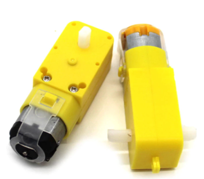
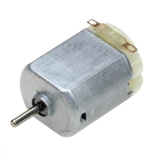
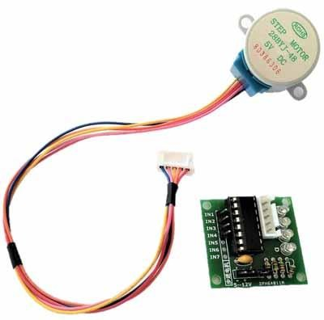
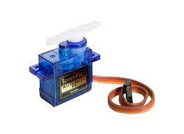

Motores de corriente continua (DC)
Especificaciones Comunes
- Voltaje: 1,5V - 12V
- Corriente: 0,3A
- Velocidad: 100rpm / 500rpm
Los motores DC suelen utilizarse con engranajes para reducir velocidad y aumentar fuerza. Los servos de radiocontrol son muy extendidos por ser económicos y fáciles de usar.


Recursos: techmake.com/tutoriales electrontools.com/electronica-digital
Motores paso a paso
Especificaciones del Stepper 28BYJ-48
Control mediante 4 pines digitales.
Resolución de 2048 pasos por vuelta.
Ajuste de precisión para posicionamiento.
Características de Operación
Requiere placa con driver (ULN2003).
Se debe indicar el número exacto de pasos.
Ideal para proyectos que requieren torque y precisión.

Servomotores
Ajuste de ángulo de posicionamiento exacto.
Control monocanal mediante un solo pin (señal PWM).
Diseño compacto: sin driver externo necesario.
Estándar: microservo SG90.
Ideal para robótica y mecanismos de precisión.
